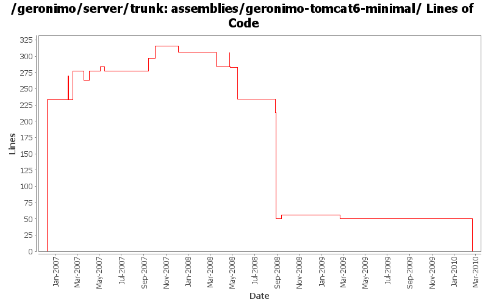

[root]/assemblies/geronimo-tomcat6-minimal
 src
(0 files, 0 lines)
src
(0 files, 0 lines)
 main
(0 files, 0 lines)
main
(0 files, 0 lines)
 assembly
(0 files, 0 lines)
assembly
(0 files, 0 lines)
 resources
(0 files, 0 lines)
resources
(0 files, 0 lines)
 var
(0 files, 0 lines)
var
(0 files, 0 lines)
 config
(0 files, 0 lines)
config
(0 files, 0 lines)
 var
(0 files, 0 lines)
var
(0 files, 0 lines)
 config
(0 files, 0 lines)
config
(0 files, 0 lines)

| Author | Changes | Lines of Code | Lines per Change |
|---|---|---|---|
| Totals | 37 (100.0%) | 537 (100.0%) | 14.5 |
| pmcmahan | 3 (8.1%) | 233 (43.4%) | 77.6 |
| djencks | 8 (21.6%) | 129 (24.0%) | 16.1 |
| gdamour | 3 (8.1%) | 87 (16.2%) | 29.0 |
| jdillon | 11 (29.7%) | 60 (11.2%) | 5.4 |
| jbohn | 1 (2.7%) | 14 (2.6%) | 14.0 |
| dblevins | 1 (2.7%) | 7 (1.3%) | 7.0 |
| linsun | 2 (5.4%) | 3 (0.6%) | 1.5 |
| kevan | 2 (5.4%) | 2 (0.4%) | 1.0 |
| prasad | 1 (2.7%) | 1 (0.2%) | 1.0 |
| hogstrom | 1 (2.7%) | 1 (0.2%) | 1.0 |
| dwoods | 4 (10.8%) | 0 (0.0%) | 0.0 |
Handle rename of tomcat plugin from javaee5 to javaee6 and rename assembly. Pull in wab instead of web plugingroups.
0 lines of code changed in 3 files:
GERONIMO-4655 upgrade version to 3.0-SNAPSHOT, make a few things more consistent
1 lines of code changed in 1 file:
[maven-release-plugin] prepare branch 2.2
2 lines of code changed in 1 file:
GERONIMO-4538 Move boilerplate to configs, make groupIds more sensible
0 lines of code changed in 1 file:
GERONIMO-4300 allow c-m-p to generate plugins with no classloader, dependending on absence of plan
55 lines of code changed in 1 file:
switch to use the web-jetty and web-tomcat plugingroup to construct little G
3 lines of code changed in 1 file:
remove unnecessary unavailable deployers
0 lines of code changed in 1 file:
Simplify things a wee bit more
2 lines of code changed in 1 file:
Remove unused schema build muck
Make sure that we unpack the zip framework assembly to avoid extra build muck and problems when /tmp is not on the same disk
1 lines of code changed in 1 file:
(GERONIMO-3985) Use SLF4J as the primary logging facade for Geronimo
0 lines of code changed in 1 file:
Drop .txt suffix on legal muck to be more consistent with maven-remote-resources-plugin, and allow the common ianal-maven-plugin config to be used
Drop per-module legal muck
0 lines of code changed in 1 file:
Use ianal-maven-plugin to help ensure that project artifacts contain legal muck
21 lines of code changed in 1 file:
GERONIMO-3924 Make car-maven-plugin have a server-assembly packaging with lifecycle that avoids need for tools-maven-plugin
4 lines of code changed in 1 file:
Update LICENSE and NOTICE files. Merge from 2.1 branch
1 lines of code changed in 1 file:
upgrade trunk to 2.2-SNAPSHOT
1 lines of code changed in 1 file:
(GERONIMO-3747) Fixed parentage of module groups, though most still need to have their modules put into the proper groupId
Updated groupId of *everything* under framework/** to org.apache.geronimo.framework, and did my best to update all references
11 lines of code changed in 1 file:
(GERONIMO-3771) Moved maven-plugins/* to buildsupport/*, updated groupId to org.apache.geronimo.buildsupport
1 lines of code changed in 1 file:
GERONIMO-3733 unpack framework before adding new plugins, not afterwards
2 lines of code changed in 1 file:
GERONIMO-3607 Add 'assemble a server' support to geronimo and use it from car-maven-plugin and gshell. Not yet available in the console. Better repository support would be desirable
30 lines of code changed in 1 file:
Fix id's for framework copy
1 lines of code changed in 1 file:
GERONIMO-3496 assemble servers out of plugins
35 lines of code changed in 1 file:
Fix up some more assembly issues for using gsh
20 lines of code changed in 1 file:
* updated copyright date to 2007
1 lines of code changed in 1 file:
Changed trunk to 2.1-SNAPSHOT
1 lines of code changed in 1 file:
GERONIMO-3155 The geronimo-tomcat6-minimal assembly has doubled in size, due to the j2ee-corba-yoko CAR being pulled in. I verified the minimal Tomcat assembly starts and the Servlet-Examples deploy and work.
0 lines of code changed in 1 file:
patch from jdmchugh that adds a dep on yoko as now the naming builders need it
7 lines of code changed in 1 file:
GERONIMO-3057 - include jasper into the minimal assemblies and make the jee5 assemblies consistent wrt jasper
14 lines of code changed in 1 file:
Clean up assembly modules usage of resources, use the same filtering
Only install config.xml as writable in assemblies, none of the other files need that
1 lines of code changed in 1 file:
Second attempt to change the way the online/offline deployers and the JSR88
deployment driver work. The first attempt was breaking the TCK amd the
eclipse plugin.
Online deployer, i.e. deployer.jar, boots a Kernel to load its dependencies,
e.g. geronimo-deploy-tool, and registers the available ModuleConfigurers with
the DeploymentManager.
ModuleConfigurers to be registered are loaded by the persistent configuration
list jsr88-configurer-config.xml.
In the case of an offline deployment, the online deployer starts the
offline-deployer configuration within the same Kernel. In turn, the
offline-deployer configuration starts a list of configurations to register
the available module builders.
Add a log4j configuration for the online deployer.
DeploymentFactoryBootstrapper is the new JSR88 deployment driver. It boots a
kernel; starts the configuration list jsr88-configurer-config.xml; retrieves
the "actual" DeploymentFactory implementation from the kernel; and delegates
to this retrieved imoplementation.
The JSR88 JAR driver is now named jsr88-deploymentfactory.jar.
This fixes:
* GERONIMO-2794 - Improve online deployer to register ModuleConfigurers from the repository; and
* GERONIMO-2767 - Minimize side effects of the offline deployer
46 lines of code changed in 1 file:
Use maven-dependency-plugin
2 lines of code changed in 1 file:
Revert deployer changes as they do break the Eclipse plugin and TCK.
I will investigate offline.
svn merge -r503370:503369 .
2 lines of code changed in 1 file:
Online deployer, i.e. deployer.jar, boots a Kernel to load its dependencies,
e.g. geronimo-deploy-tool, and registers the available ModuleConfigurers with
the DeploymentManager.
ModuleConfigurers to be registered are loaded by the persistent configuration
list jsr88-configurer-config.xml.
In the case of an offline deployment, the online deployer starts the
offline-deployer configuration within the same Kernel. In turn, the
offline-deployer configuration starts a list of configurations to register
the available module builders.
Add a log4j configuration for the online deployer.
This fixes:
* GERONIMO-2794 - Improve online deployer to register ModuleConfigurers from the repository; and
* GERONIMO-2767 - Minimize side effects of the offline deployer
39 lines of code changed in 1 file:
change "tomcat" artifactIds to "tomcat6" for :
configs/tomcat6
configs/tomcat6-deployer
modules/geronimo-tomcat6
modules/geronimo-tomcat6-builder
assemblies/geronimo-tomcat6-jee5
assemblies/geronimo-tomcat6-minimal
updated various poms, deployment plans, and plugin-metadata.xml files to reference the new tomcat6 artifactId
233 lines of code changed in 3 files: